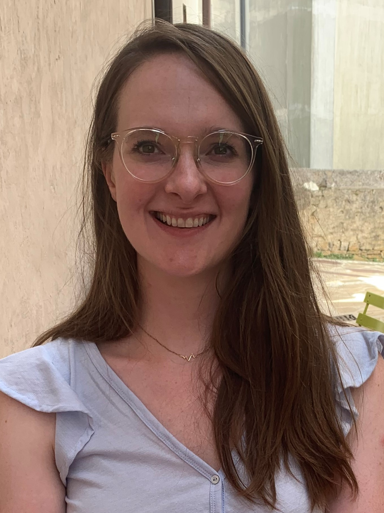

Hi Folks!
My name is Stefanie, nice to meet you!
At the time of writing, I am in my last week as a 31-year-old. I live in Turnhout, which is in the north of the country.
I like to be creative. In my spare time, I like to focus on some creative projects around the house. I also started woodworking as a hobby.
I studied at the KU Leuven, where I got a masters degree in Speech language therapy & Audiology, and in Management. I worked a couple of years in the port of Antwerp, but noticed that wasn't really my thing. Around that time, my interest in IT started to show. For the last 4 years, I worked as a software tester.